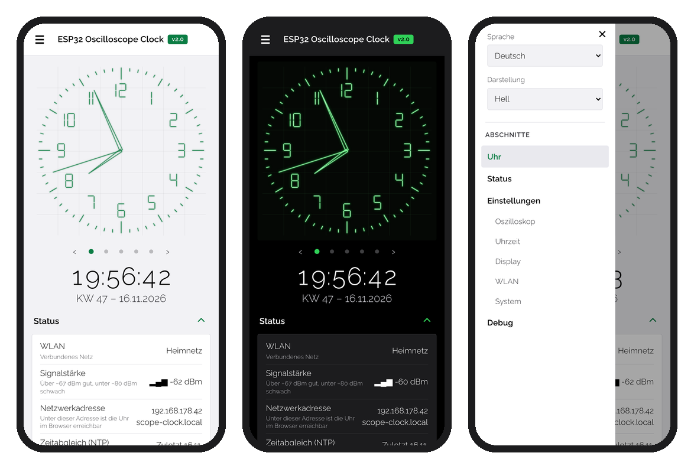

ESP32 Oscilloscope Clock v2.0
Eine analoge Uhr, gezeichnet vom Elektronenstrahl: Der ESP32 erzeugt die X/Y-Spannungen mit seinen DACs – mit Zeit aus dem Internet, OLED-Anzeige und Webinterface fürs Handy.
An analogue clock drawn by the electron beam: the ESP32 generates the X/Y voltages with its DACs – with time from the internet, an OLED display and a web interface for your phone.
Die Testseite läuft ohne Uhr im Browser – alle Werte sind simuliert.
The test page runs in the browser without a clock – all values are simulated.
Funktionen
Features
- Genaue Zeitper NTP, automatische Sommerzeit; optional Echtzeituhr DS3231 für den Betrieb ohne Internet.
- Accurate timevia NTP, automatic daylight saving time; optional DS3231 real-time clock for use without internet.
- Gleich helle Liniendank konstanter Strahlgeschwindigkeit, kaum sichtbare Rücklaufspuren, ca. 230 Bilder/s.
- Equally bright linesthanks to a constant beam speed, barely visible retrace lines, approx. 230 frames/s.
- Fünf Zifferblätterund ein Testbild zum Einstellen des Oszilloskops; Wechsel per Wischen.
- Five dialsand a test pattern for adjusting the oscilloscope; switch by swiping.
- Für jedes OszilloskopProfil DIGITAL (Speicher-Oszilloskope) oder ANALOG (Röhre), per BOOT-Taster.
- For any oscilloscopeprofile DIGITAL (storage scopes) or ANALOG (CRT), via the BOOT button.
- WebinterfaceLive-Vorschau, Status, alle Einstellungen, WLAN, Debug – Deutsch/Englisch, hell/dunkel.
- Web interfacelive preview, status, all settings, Wi-Fi, debug – German/English, light/dark.
- OLED am GerätUhrzeit und Datum im 7-Segment-Stil, WLAN und Signalstärke.
- OLED on the devicetime and date in 7-segment style, Wi-Fi and signal strength.
Bilder
Pictures





Oszilloskop- und OLED-Bilder sind am PC aus den echten Firmware-Daten erzeugt, die Webinterface-Bilder sind Screenshots. Fotos des fertigen Geräts folgen.
Oscilloscope and OLED pictures were generated on a PC from the real firmware data, the web interface pictures are screenshots. Photos of the finished device will follow.